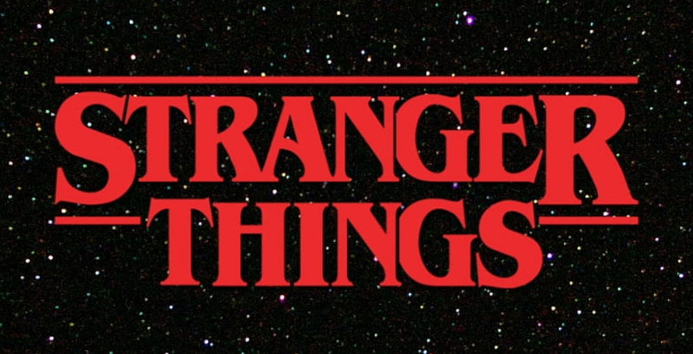
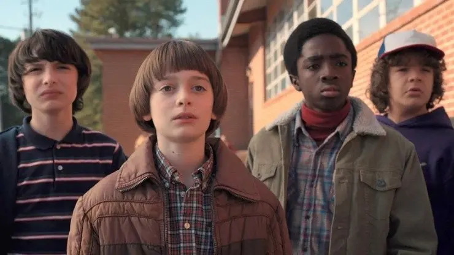
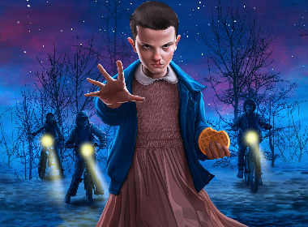

|  | |
A HISTÓRIA:A série se passa na década de 80, em uma pacata cidade fictícia dos Estados Unidos chamada Hawkins, e apesar de ser uma cidade pequena, guarda segredos muito grandes. Tudo começa quando Will, um garoto de 11 anos está voltando para casa de bicicleta com seus amigos depois de uma noite dos garotos. Ele se despede, segue em direção a sua casa e depois disso desaparece misteriosamente, fazendo com que todos comecem a procura-lo. Ao mesmo tempo a história mostra sobre os experimentos ocorridos em um laboratório de Hawkins e a existência de um "mundo invertido", que é o nosso mundo, só que em uma realidade paralela, e é lá que Will vai parar. |
 |
|  |
MISTÉRIOS:A série também apresenta uma garotinha Chamada Eleven, que está foragida do laboratório Hawkins e possui poderes psicocinéticos. Em sua fuga ela acaba encontrando com os amigos de Will (o desaparecido), que são Lucas, Mike e Dustin, no meio da floresta enquanto estão procurando o amigo sumido. Em meio a tantos mistérios o grupo tenta desvendar onde está Will, quem são os responsáveis pelo seu sumiço e de onde vem Eleven, a garota esquisita e tão diferente que eles acabaram encontrando. |
|
Esse é só o começo dessa série da Netflix cheia de reviravoltas, mistérios, monstros e fugas, que vão te prender na tela em uma maratona Stranger Things, e se apaixonar e emocionar com todos os personagens. |
|
|
Desenvolvido por Carolina Prado - 2023 |
|